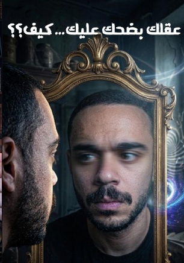
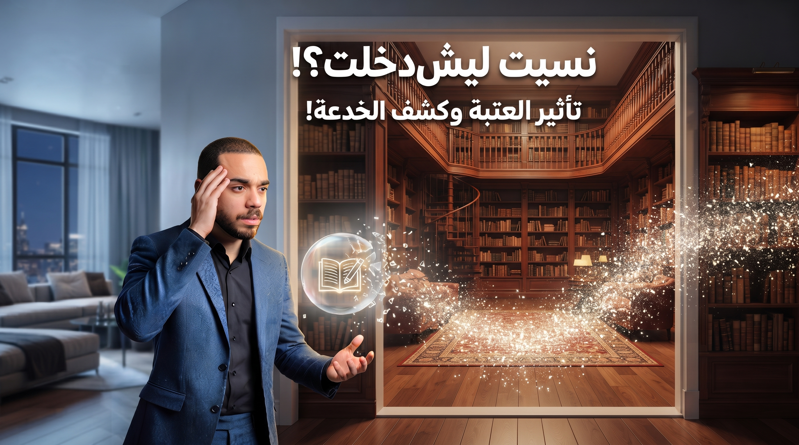

كيف يتجاهل العقل البشري لحظات إدراكية مهمة؟ إهمال حركة العين السريعة داخل الدماغ دلالة عميقة على طريقة معالجة الدماغ للمعلومات.
الفيزياء وعلم الفضاء يكشف لنا عن أبرز الاكتشافات؛ مادة من نجم نيوتروني على ملعقة طعام صغيرة توازن وزن جبل إيفرست على كوكب الأرض.

تأثير العتبة وانتقال الإدراك البشريتأثير العتبة وكيف أن انتقالك من مكان إلى مكان ممكن أن ينقل إدراكك وتفكيرك من شيء إلى شيء آخر تماماً، أحد أسرار الفكر والوعي البشري.
الماضي هو تجربة عقلية لحماية عقلك من الفراغ. أكثر شيء متعب للعقل الإدراكي البشري هو الفراغ المطلق.
تابع الرحلة اليومية والنقاشات العميقة مباشرة عبر منصة إنستغرام.
زيارة حساب إنستغرام